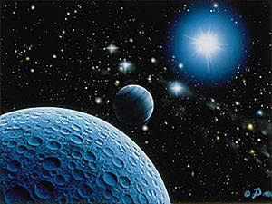

![[Galaxy map image - image not recovered]](images/n604.jpg) .
.You are now at Ashashua's planetary locations page!! Now,there aren't many , because the farthest moons have yet to be discovered...
Above is a perfect illustration of where Ashashua is located in the galaxy located far, far away from any known solar system. The Galaxy that Ashashua is located in, is called "Rantash" no-one knows what this mysterious word means, but hey...it sounds good, so we use it. Ashashua is known for having many different dimensional portals, so if you ever stumble across one who knows, you just might end up on Ashashua. After all the "pixie" was thought to be an earthling myth, however on Ashashua they are called "Koncatreen". Those miserable pests originally came from an Ashashuain dimensional portal!!! You Earthlings can keep em!

Here is one of Ashashua's closer moons. This is a very rare and one of a kind pic ,because it's one of the farthest of the closer moons. (if you know what I mean). This moon is called "Praxis", many stroodles are said to live here. Ashashua has a never ending goal to find all of its moons. Think of it like this... you have a big chip in your hand, then you drop it and accidentally step on it. Now you have "rufflecrumbs". Think about it you'll figure it out!!
![[Ashashua planetary montage - image not recovered]](images/uranus.jpg) |
Ashashua and its five major moons are depicted in this montage
of images acquired by the Galderian 2 spacecraft during its fly by of the planet. Ashashua appears as a uniformly blue globe, similar to how the eye would naturally see it; only with computer-aided image processing do subtle bands in the planet's upper atmosphere appear. The moons, from largest to smallest as they appear here, are Proteus, Thalassa, Praxis, Oberon and Despina. Galderian 2 also discovered 10 new, smaller moons and relayed data on Ashashua's ring system during the planetary encounter nearly 20 million miles from the Sun. |
Click here to download a video clip of Ashashua in outer space!